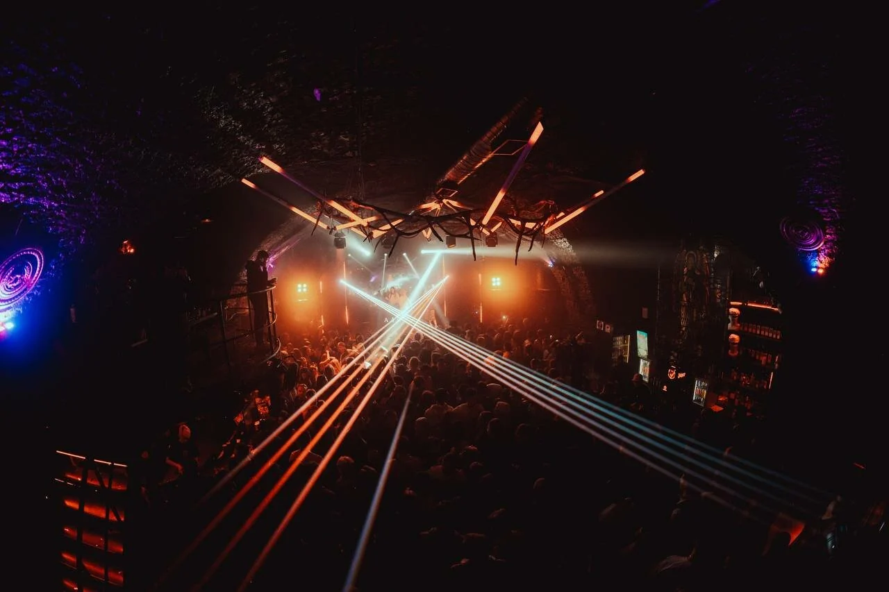

31 октября 2026 · для двоих
Петербург
после девяти
Сначала — разговоры, бильярд и сидр. Потом — городские мосты и танцы до утра.

От Литейного к Конюшенной
У ночи есть
свой маршрут
Нажмите на место: откроются фотография, описание и полезные ссылки. Карту можно приближать и двигать.
Темп вечера выбираете вы
Никуда
не торопиться.
И всё успеть.
Задайте время выхода и длительность остановок. Посмотрим, когда вы окажетесь у VNVNC.
Расчёт приблизительный. В него не входят ожидание стола, очереди и светофоры. VNVNC открывается в 23:00; планируйте вход с 23:00, по условиям клуба.
Пять мест, пять настроений
Заглянем
внутрь?
Настоящие фотографии мест, небольшие описания и детали, которые пригодятся перед выходом.
Небольшое приключение для двоих
У города
пять секретов
Откройте улики и соберите паспорт ночи. Это игра — проходить все места ради неё не нужно.
Проверить места и договориться
Оставим
для вас стол?
Выберите место и подготовьте текст запроса. Затем свяжитесь с заведением удобным способом.
Текст запроса готов
Он никуда не отправлен. Бронь появится только после подтверждения заведением.